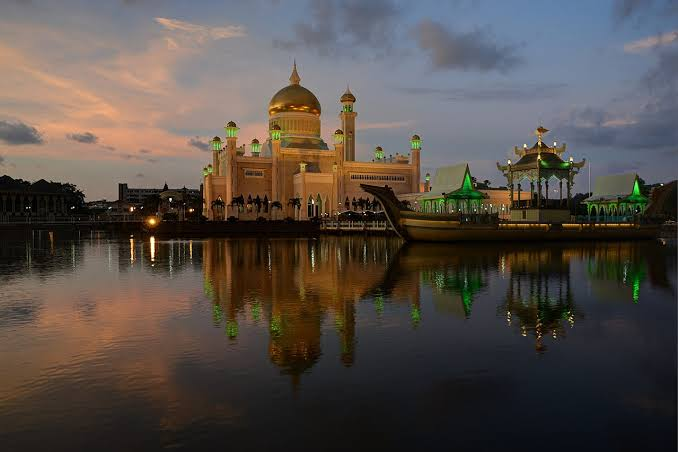
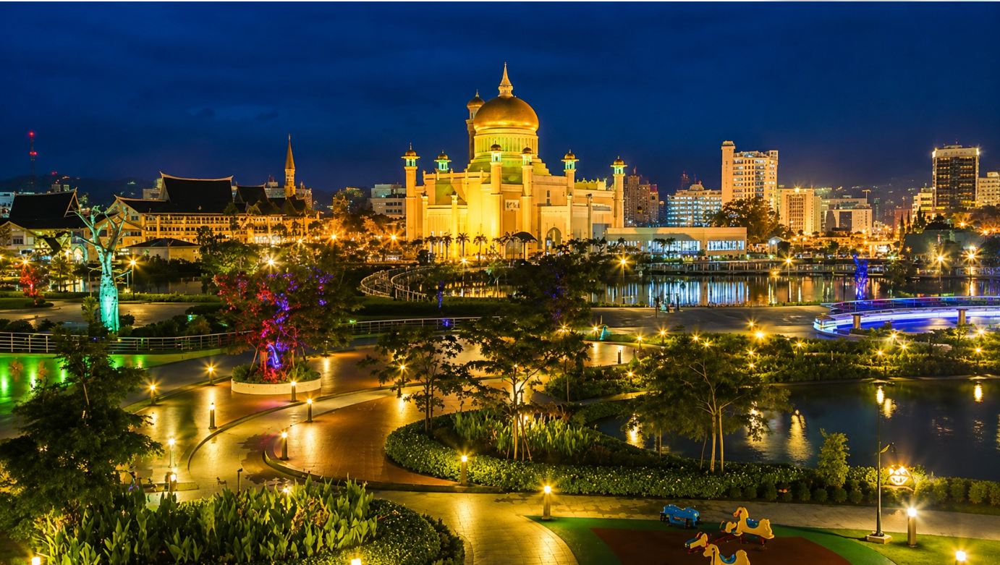
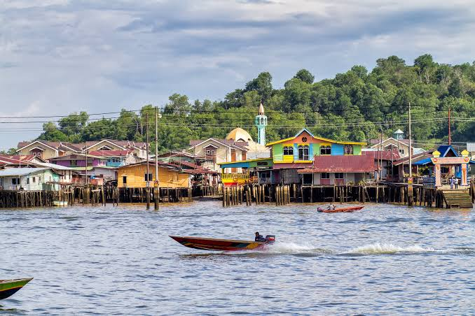
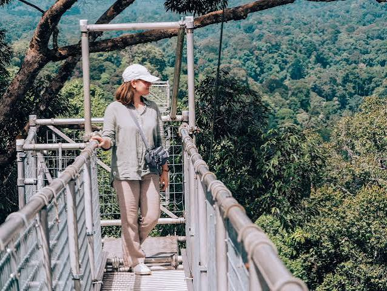
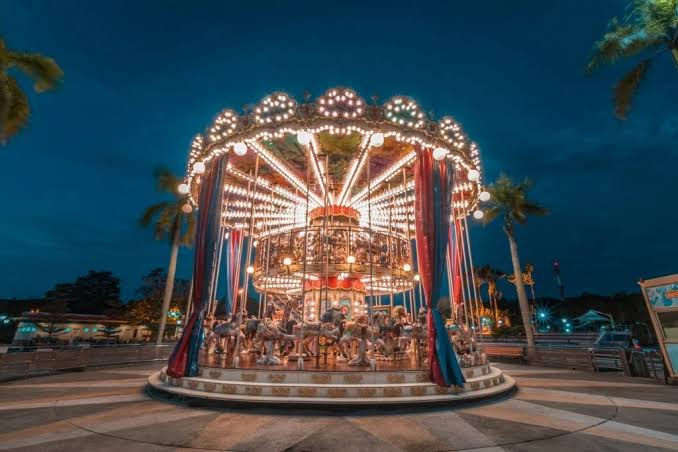

Sultan Omar Ali Saifuddien Mosque
Visitors often come here to see the beautiful arcitecture

Explore famous destinations in Brunei

Visitors often come here to see the beautiful arcitecture

Explore the amazing water village and meet the communities

Discover Brunei's Tropical Rainforests and see different animals

Having fun with families and go on different rides
want to discover more places in Brunei? Visit the offcial Brunei Tourism Website for more information
Visit Brunei Tourism